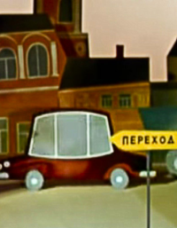
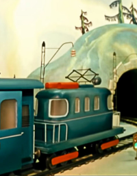

Начинаем с простенького.
Судя по мультфильму, Чебурашка и гена много гуляли и ходили пешком. А вот если бы они устали, то могли бы спокойно воспольщоваться любым другим способом передвижения, кроме одного.
Какого?
Судя по мультфильму, Чебурашка и гена много гуляли и ходили пешком. А вот если бы они устали, то могли бы спокойно воспольщоваться любым другим способом передвижения, кроме одного.
Какого?


